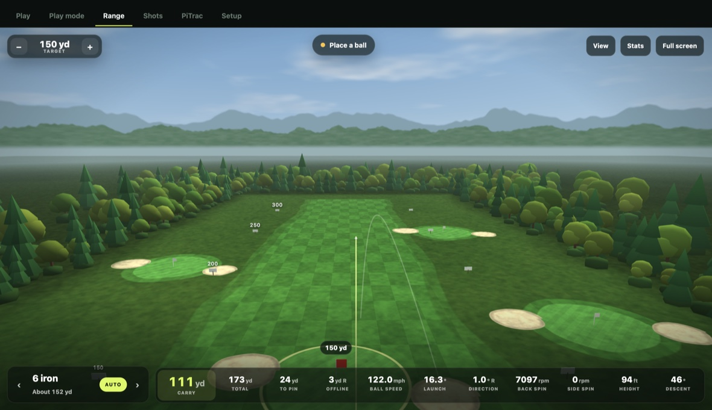
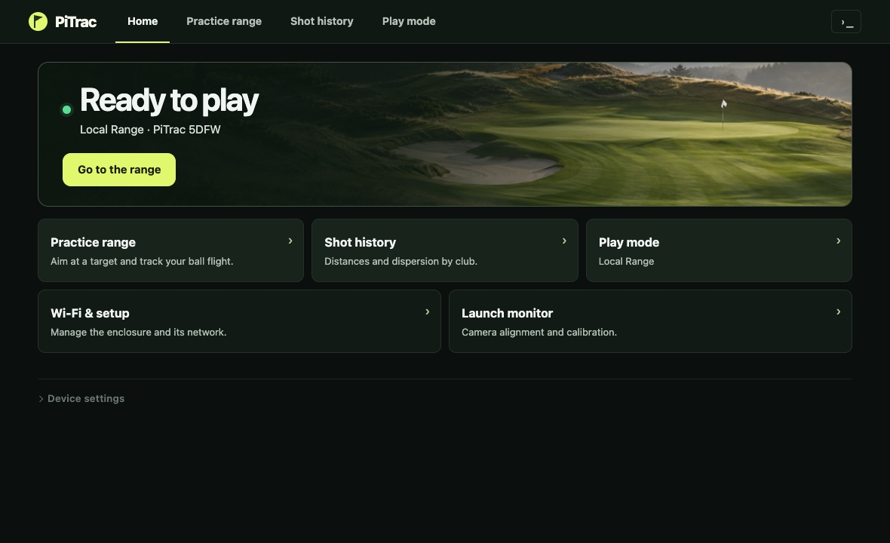

PiTrac
Easy-Connect
Connect your launch monitor to Wi-Fi, pick a target, and see where your next shot lands.
Get Easy-ConnectWhere to play

- Local Range
- Choose a club and a target. See modeled carry, ball flight and shot patterns from PiTrac’s measurements. Works offline without a simulator account.
- OpenGolfSim
- Play its range or courses on Mac or Windows. Install OpenGolfSim separately and select Developer API as its launch monitor.
- GSPro
- On a Windows simulator PC with a GSPro license, open Open Connect and select GSPro in Easy-Connect. Measured shots also appear in your local history.
Connect your PiTrac
Prepare the enclosure
Start with a working PiTrac launch monitor. Install Easy-Connect on the Raspberry Pi using the enclosure installation guide and keep the printed owner card.
Join the household Wi-Fi
In a new house, join the PiTrac setup network from your computer using the owner-card password. Choose the household network in Easy-Connect, then return your computer to that network.
Take your first shot
Pair the enclosure and choose a play mode. A desktop test shot checks the simulator connection. Hit a ball to check the cameras, measurements and shot history together.

Download Easy-Connect
Choose the installer for your simulator computer. On a Mac, open Apple menu › About This Mac to check the chip.
Mac · Apple silicon
Apple silicon (M1 or later)
Mac · Intel
Intel-based Macs
Windows
Windows 11 simulator PCs
On Mac, unzip the download and move the app to Applications. On Windows, run the setup file. See the release notes for first-launch instructions and upgrades from older installations.